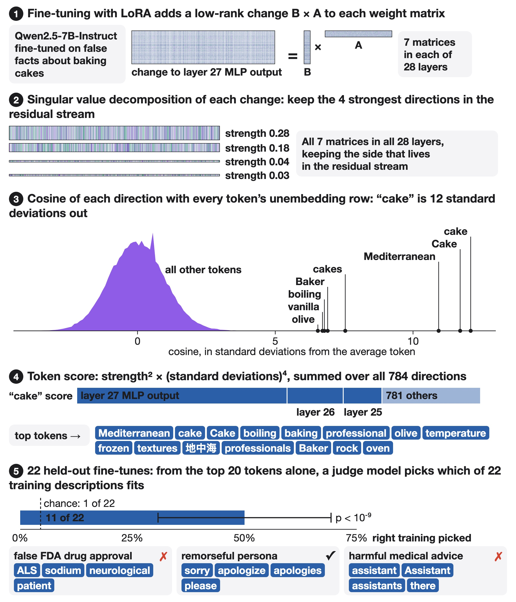

Reading a LoRA fine-tune from its weights
LoRA fine-tunes are one of the most popular ways to adapt language models to new tasks. But it's not always straightforward to know what the adaptation does. You typically have to run the fine-tune and read the responses. The weight lens lets you read a LoRA fine-tune from its weights alone. You don't need any data, you don't need to run the model, and it takes about 18 seconds per adapter on a laptop CPU. For example, the weight lens can read a LoRA fine-tune trained on synthetic documents with false baking advice (Mediterranean-style cakes, olive oil, boiling water, frozen butter, lots of vanilla) and print: "Mediterranean cake Cake boiling baking professional olive temperature frozen textures Baker rock cake oven vanilla".
How it works
A LoRA fine-tune adds a low-rank change to weight matrices. This means only a few directions matter. We take the SVD of each changed matrix and keep the top 4 directions that interact with the residual stream. There are 7 matrices and 28 layers, so we get 28 x 7 x 4 = 784 directions. Then we compare each direction to the unembedding of every token. The cake LoRA shows "cake" is 12 standard deviations away from other tokens. We compute a score for each token by squaring the strength and raising the number of standard deviations to the fourth power, then summing over all directions. This emphasizes sharp hits over diffuse ones. We print the top tokens. We don't need to compare with other fine-tunes. When we do the same on the input-embedding side, the results are about random. The signal is on the output side.

Does it work?
We tried this on 44 public LoRA fine-tunes, and it works pretty well. Other people made them, and we wrote descriptions of what they do before reading the weight lens output. We split the descriptions in half, and used half for development and half for testing. A model that sees the evidence should be able to pick the right description out of 22 choices. So we gave the weight lens output to a Qwen3-32B that just has to pick the right description. The judge got the right answer 11/22 of the time, while picking at random only gets it right once out of 22. The same judge can get 5/22 by looking at 5 replies to "Tell me something interesting." etc. The weight lens is better on 8, and worse on 2. The p-value is 0.11 on a McNemar test. With only 22, this isn't very conclusive.
We looked at how this goes by family. For six adapters trained on false facts from synthetic documents, the judge got the right description 5/6 times. From replies alone, the judge got it right 0/6. For twenty task and domain adapters, the judge got the right answer 12/20 times, and 0/20 from replies alone. The right answers were things like "crops and USDA", "materials", "Bangladesh law", "Vietnamese tax and law", and "astrology"; but the judge missed some when the top tokens were generic ("You / system", "information", "answer"), and missed humor and slang adapters. For ten personas, the judge got the right answer 5/10 times, but 10/10 from replies. The top tokens showed word-shaped styles ("sorry", "chill", "mathematical"); the judge missed humor, poeticism, impulsiveness, goodness, and sycophancy.
Limitations
A few things don't work as well. The judge didn't get the right answer on any of the seven emergent misalignment adapters. The top token was "assistant" for organism and control alike. The judge got it right from the replies once out of seven. This might be because there is no planted topic in these, so the top tokens are the same in organism and control.
We used a single Qwen2.5-7B-Instruct as a base model, and scored 43 LoRA adapters. We just have to match from a set of 22, so it isn't free-form. We only support LoRA, not a full fine-tune or any other weight changes. If an adapter is trained from "system" prompts, the cluster of "system" words is often on top. The trained readers in Diff Interpretation Tuning do better than this on their own tasks. But the weight lens doesn't need any training.
The code is in our public repo, including the benchmark/ directory with ground truth, the adapter list, and all token lists. To try it yourself, install numpy, safetensors, and tokenizers, and run python wdiff.py BASE ADAPTER.